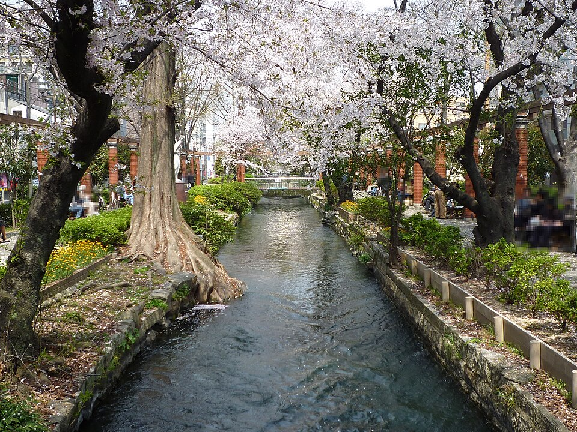
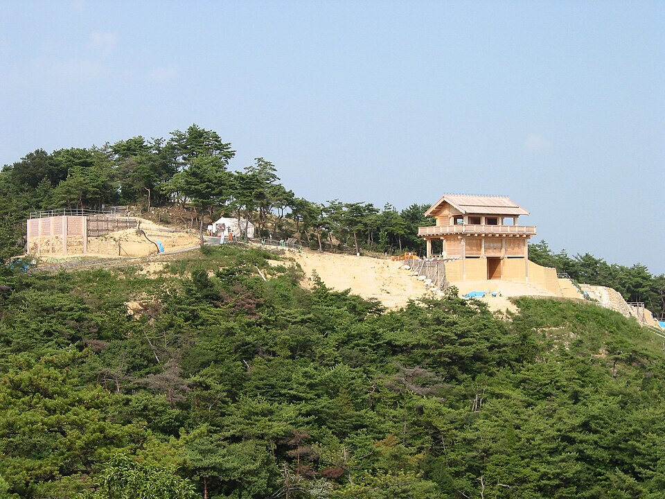
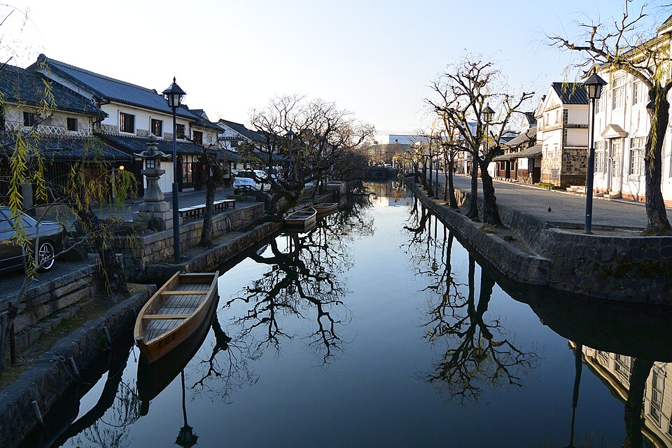
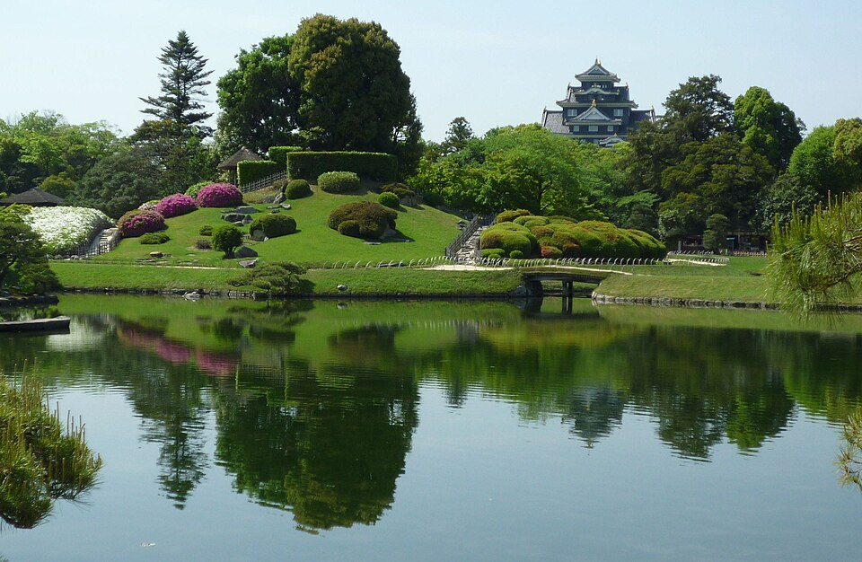

12/10–12/13四天三夜
岡山站周邊建議連住三晚
17:55 回程起飛16:00 前到機場
✈️ 航班（台灣虎航）
IT214 去程12/10（四）
11:10桃園 T1 · TPE
14:35岡山 · OKJ
IT715 回程12/13（日）
17:55岡山 · OKJ
19:55桃園 T1 · TPE


第二天｜鬼之城・古代山城健行
JR 到總社站，計程車上山｜西門、城牆步道與展望台
📌 鬼城山沒有方便的大眾運輸，上下山都靠預約計程車。前一天先預約去程，上車時就和司機約好 14:00 回程；山上臨時叫車不易。步道有石階與碎石路段，穿防滑鞋。
完成 0/0
07:30
順便買好午餐、熱飲與小點心，山上餐飲選擇很少。準備
08:00
往總社可搭 JR 伯備線（較快）或吉備線（桃太郎線），依當日班次調整。交通
08:30–09:00
在鬼城山遊客中心下車；上車時約好回程時間與地點。交通
09:00–09:30
看展示、拿步道地圖、上廁所，確認當天步道狀況。定位📍地圖
12:00–13:00
在可停留的位置用餐，垃圾自行帶走。休息
13:00–14:00
眺望總社市區與吉備平原；依天候與體力補拍。攝影📍地圖
14:00–14:30
依約定時間在遊客中心上車。交通
15:00左右
依當日班次搭車。交通
16:00後
健行日早點休息，為隔天保留體力。用餐

第三天｜吉備津神社＋倉敷
上午 JR 吉備線到吉備津神社｜下午倉敷美觀地區、黃昏攝影
📌 吉備津站班次不多，回程先查好 JR 吉備線時刻。大原美術館開館時間與休館日以官網為準。
完成 0/0
上午｜吉備津神社
08:00
搭 JR 吉備線（桃太郎線）往總社方向。交通
08:30
從車站沿松並木參道步行前往。散步
10:30–11:00
依查好的班次回到車站。交通
下午｜倉敷美觀地區
11:00–12:00
岡山轉 JR 山陽本線到倉敷；倉敷站步行約 10–15 分鐘到美觀地區。交通
12:00–13:00
週六中午人多，可提早用餐。用餐
16:00–17:00
拍黃昏的倉敷川與白壁倒影。攝影
17:00–18:00
回岡山站後晚餐、休息。交通📍地圖

第四天｜岡山後樂園＋岡山城
後樂園是日本三大名園之一，值得保留完整的上午｜16:00 前抵達機場
📌 建議以岡山站西口約14:50出發的機場巴士作規劃參考，預計約15:20抵達機場；請核對當日最新時刻表，並依航空公司報到要求調整。
完成 0/0
07:30
先確認飯店行李寄放方式，帶隨身物品出門。準備
11:30–12:30
在城下或岡山站周邊用餐。用餐
12:30–13:30
買伴手禮、補充飲水；不要安排太遠的景點。購物
13:30–14:15
確認行李與岡山站西口巴士乘車位置。交通📍地圖
14:50左右
此為規劃參考班次，請核對當日官方時刻表。返程
約15:20
辦理報到、安檢與出境。機場📍地圖
16:00前
IT715 17:55 起飛、19:55 抵達桃園 T1；依台灣虎航規定時間報到。航班